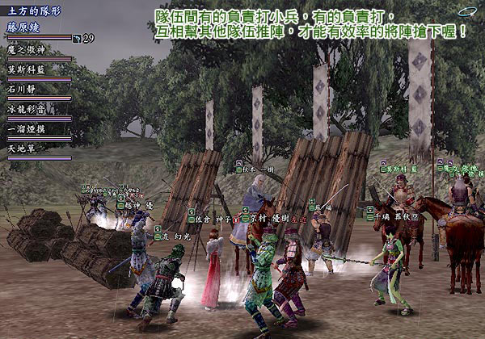

實戰篇：「奪陣部隊」
合戰場中的勝負最主要的就是要提高戰果，才能贏得每次的陣取戰，
而提高戰果的方法只有打倒敵方的NPC ，毆打一般的士兵或是擊敗武將是會取得不同的戰果。
不過要討取武將並非容易的事情，每個陣的周圍都有許多士兵與守備隊在旁邊守護，
有時也會有敵方玩者們在陣裡防衛，因此需要玩者們彼此的支援與配合，所以戰場上會有因應不同的目的而組成的隊伍。
合戰場上徒黨的構成約有下列幾種：
武將隊伍 |
就是以奪陣擊敗武將為目標，同時也會增加戰果。 |
NPC 隊伍 |
打每個陣附近的守備隊增加合戰的戰果。 |
對人隊伍 |
就是擊退敵方的奪陣徒黨或是去阻撓敵人陣內的防衛隊伍。 |
有七人的徒黨當然也會有小徒黨或是單人的玩者，專門狙擊敵方落單玩者或是救援我方玩者，
還有會去偵察敵情擔任情報傳遞的工作，同時合戰場上也會有後備支援的玩者，
回復轉生役、修理、召喚靈石手裡劍、分享精氣，有生產會的話也會有食物與丹藥的配給等等。
以下將就各種合戰場上的分工合作，做個簡單的介紹。
奪陣部隊
奪陣部隊就是合戰的的主力團，顧名思義就是奪取敵方的陣地。
一般奪陣（武將）徒黨構成都是以穩定為主，兩個盾（一鍛一盾侍）、兩個回復役（一藥一僧）、兩個攻擊手加上一神職，
至於細部的職業分配則可視對象武將做調整，攻擊手也能以二刀侍、陰陽師或是忍者的特性來做調配。
只要大家在出發前先討論好戰術，前、中陣武將應該沒什麼難度，可以順利擊敗；
不過後陣與本陣的武將不但等級高，使用的技能也相當奸詐，難度相對也比較高，
此時不但考驗玩者的默契，還是個看出玩者經驗足不足夠的好地方。
奪陣部隊通常都會有二個隊伍互相掩護進行取陣，也有單一的奪陣部隊配合特攻部隊的掩護來奪陣。
奪陣的隊伍要儘量避免不必要的戰鬥，免得浪費時間和精神，來增加自身的疲勞度，
也避免隊伍打草驚蛇，成為敵方明顯的目標，變成被圍捕對象。
如果很不幸的被敵方抓到，而進入戰鬥，此時可以考慮以投降的方式來脫離，然後重新組隊奪陣。
玩者們可以在攻打武將前先做好詳細調查，哪些武將會使用的招數，
想出相對應的策略或是作為選隊員的參考，都是可以增加成功率的不錯方法喔。
通常大家打武將都會找熟識的玩者，一方面彼此有點默契了，對於對方的技能應變能力也較瞭解，戰術溝通上也比較輕鬆。

戰場上雙方各是由九個陣組成的（左中右、先中後），還有本陣以及小荷馱，
除了先陣只有大將以外，中、後的陣都由大將與副將兩名所組成，本陣 內則 有大名 、 軍師與四天王站台 ，
小荷馱則是屬於 NPC 補給站，裡面除了有可以買一些基本的補給品外還有一位武將鎮守著。
當敵方陣地內的大將與副將被玩者們殲滅的時候，就表示該陣已經被我們奪下了，
已經屬於我方的陣裡就會「長出」一位我方的武將，大將是需要經過一個小時，副將是會馬上出現。
敵方的玩者們只要再打倒這位我方的武將，就可以再奪回他們的陣地了，原本敵方的武將也會再冒出來，
所以我方的陣地被敵方奪下之後也是會冒出一位敵方武將，玩者們就是要展開一場你來我往的爭奪戰。
必勝撇步： 減少戰場上自由活動的玩者
擊敗小荷馱隊與本陣內的武將會使很多玩者無法自由地進出該陣取戰的合戰場， 因為隊長已經掛了還沒進入戰場的玩者就領不到軍旗，
而還在戰場上的玩者如果死過就需要等待受傷復原的時間，去擔任偵查或是特攻的工作就會受到限制。
有時玩者在對人戰的時候，也會不是先打猜測中的旗頭，而是先選擇打掛身分較低的與力或是足輕大將，
前者為隊長最易受到攻擊的先陣武將，後者則是沒有隊長，一旦死亡將不能成佛馬上回來，
必須經過一段等待受傷的時間，因此先擊敗他們，也算是牽制敵方的可運用人力。
幾個能夠削弱對方武將(弱體)的方法 [合戰場武將弱體化條件與內容]
1. 無法將「先鋒」弱化。
2. 打倒敵方隊伍內「中備、後衛」的副大將後，將可將弱化大將，敵方陣中的大將隊伍人數將會減少。
( 右先鋒大將→右中備副大將、右中備大將→右後衛副大將 ) 。
3. 打倒「中備、後衛」的大將，將可弱化副大將或身旁的大將，敵陣的隊伍人數將會減少。
( 右中備大將→中中備大將→右後衛副大將 ) 。
4. 把「後備要害、補給隊」大將 NPC 隊伍打倒一定人數時，隊伍人數將會減少。
5. 駐陣在本陣的武將順序首先最裡面的是大名，其身旁的是軍師，前方則有四天王護衛。
打倒四天王的話，會減少軍師的隊伍人數。若進一步打倒軍師時，則大名的隊伍人數則會減少。
6. 隊伍弱化的體數將會有一定的上限，當到達上限時則無法在進行弱化，若已被弱化後的大將或副大將，
其相對弱化的武將復活後，弱化的隊伍將會恢復為正常的隊伍人數。
成功點到武將的技巧
一般武將徒黨出發前都會先討論好行進路線，因為有的陣會有障礙物，有的陣有兩條以上的路線，
沒有先說好要往那邊走將容易使徒黨分散，就又要再重新集結特攻重頭開始。
路線討論好之後，玩者也別忘了利用按鍵盤上的 END 鍵，把自己的指標對象切換成 NPC ，
這樣可以過濾不會點到敵對國、或是我方的特攻玩者；
再來就是要按數字鍵盤 5 ，將角色切換成主觀視角。
這樣就能無視於其他人物的存在，直接穿過他們往前奔跑，免於被 NPC 或是其他玩者卡住而分散，這三部分都是很重要的。
當一切都準備好時，就會開始攻打武將的倒數，一般來說都是從五開始倒數，
當數到二時特攻出發，而神職的玩家也要開始為隊伍施放行進曲、神隱等技能，
等到「 0 」的數字出現在畫面時，想都不要想馬上照著剛才討論過的路線出發，
由於是切換到主觀視角，因此玩者眼前看得到的應該除了 NPC ，就只剩下特攻的人，
假如還可以看到同隊伍其他人，那就表示自己的起步太慢了，此時失敗的成分也會比較高。
何謂特攻
特攻部隊，也可以說是自殺隊，主要是牽制敵方的行動，以利自國的奪陣部隊成功的深入敵方陣地，討伐大將。
由於每個敵方要害中除了武將外，都會有不少紅字 NPC 在一旁晃來晃去，
有時也會有敵方的玩者隊伍在防守著該陣，因此當有武將徒黨準備奪陣時，
就相當需要多名擔任特攻的玩家去引開 NPC 、攻擊敵方的玩者，
讓敵方的玩者沒有機會分散破壞我方的武將徒黨，故雖然武將徒黨很風光，
但若沒有這些特攻玩者幫忙開出一條康莊大道，想成功點到武將進入戰鬥也不是那麼容易的事。
因此別小看特攻的重要性，這可是個犧牲小我完成大我、絕對不能缺少的必要角色，
若想打贏就是要同心協力，大家都是會互相幫忙有空的就會去當特攻，畢竟目標一樣都是希望可以成功地奪下對方的陣地；
有時當特攻雖然已經陣亡了，可是大家還是會去關心到底有沒有順利地點到武將，
就會大喊聯絡成功與否是不是需要進入救援，有時當特攻也是會很有成就感的喔。
特攻小重點
當特攻時別忘了要把身上的裝備都脫光光，也要準備個爛袋子做替換，
免得雖然脫光了其他防具，但一個上好的袋子卻因當特攻而變得破破爛爛。
當特攻的人雖然不用擔心打武將的戰術問題，不過還是需要確認武將徒黨的行進路線，同時還要專心 聽從武將徒黨所發出的指令；
另外，雖然說特攻是為了要引武將以外的 NPC ，可是視野相當廣的武將本身，有時也是很容易被引出來的，
當玩者在訊息框上發現自己被武將襲擊字樣出現時，要趕快點選離身邊最近的 NPC 或是 PC ，
雖然不見得一定來得及，但有點總是會有效，免得自己一個跟武將單挑，把真正的武將徒黨甩在外頭。
合戰場上有疲勞度的影響，即使是一個特攻對上七人的隊伍，就會讓對方七人都各增加一點的疲勞度。
如果所牽制的隊伍為奪陣部隊，可以用所謂的「車輪戰」的方式，在戰鬥場內的人，打開請求支援，
此時頭上就會出現一個「！」，在外面的戰友便可以一個一個的進來替補，進入戰鬥來拖延時間，
有時候奪陣團會因為這樣的車輪戰，而全體落敗。